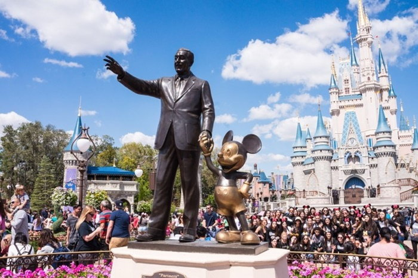
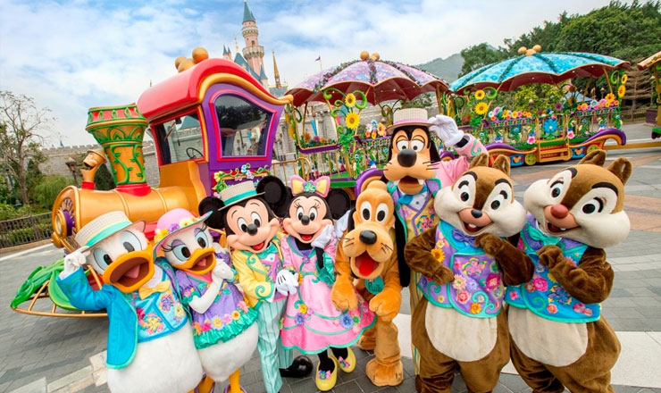

</tr>
<h2>ประวัติความเป็นมาของ Disneyland</h2>
<hr width="76%" size="4" align="left" noshade color="#F08080"><!--เส้นใต้-->
</table>
</body>
</html>
<body bgcolor="#FFE4E1" text="#3366CC"></body><!--สีพื้นหลัง,สีข้อความ-->
<table border="1" width="20%" cellpadding="1" align="right"><!--ขนาดตาราง-->
    <tr>
        <td bgcolor="#FFFFCC" align="center"><h3>Disneyland<h/3></td><!--สีตาราง,ข้อความ-->
    </tr>
    <tr>
        <td bgcolor="#CCFFFF"><h5>ดิสนีย์แลนด์ (Disneyland) สวนสนุกธีมปาร์คที่มีที่ตั้งอยู่หลายแห่งทั่วโลก แต่ละที่ก็ล้วนใช้ทุนสร้างอย่างมากมายมหาศาล เพื่อที่จะเก็บเอาความสุขในวัยเด็กไว้ให้เราได้เที่ยวกัน<!--สีตาราง,ข้อความ-->
            <br/><br/>ดูข้อมูลเพิ่มเติมได้ที่ <br/><a href='https://travel.trueid.net/detail/wlLkJkkkAQ2W'><p>•	6 ดิสนีย์แลนด์ Disneyland แดนเทพนิยายของจริงรอบโลก</p></a><!--Link-->
            <a href='https://sites.google.com/site/letseatinkorea123/sss'><p>•	ประวัติความเป็นมาของ Disneyland</p></a>
            <a href='https://thematter.co/entertainment/lets-talk-about-disneyland/64869'><p>•	  กว่า 60 ปี Disneyland ย้อนดูการก่อร่างสร้างสวนสนุกดิสนีย์ ทั้ง 6 แห่งทั่วโลก</p></a>
        </h5></td>
    </tr>
    <tr>
        <td bgcolor="#E6E6FA"><h5><!--สีตาราง-->
            <form action="/my-handling-form-page" method="post">
            <div>
            <label for="name">สาขาใน Disneyland:</label><!--ข้อความ-->
            <input type="text" id="name" name="user_name"><!--ช่องใส่ข้อมูล-->
            </div>
            <br/>
            <div>
                <input type="submit" value="Search" ><!--ปุ่มกด-->
            </div>
            </form>
        <body>
            <table borser="1">
                <h4>Walt Disney ผู้ก่อตั้ง Disney:</h4><!--ข้อความกำกับ-->
            <tr>
                <td></td><!--รูป-->
            </tr>
            </table>
        </body>    
        </h5></td>
    </tr>
  </table>
</body>
</html>

<h5 align=left> วอลเตอร์ อีเลียส ดิสนีย์ (Walter Elias Disney) (5 ธันวาคม 2444 - 15 ธันวาคม 2509, ค.ศ. 1901-1966) เป็นผู้สร้างผลงานการ์ตูนที่แพร่หลาย และ ประสบความสำเร็จมากที่สุดของโลกคนหนึ่ง เขาเป็นผู้ร่วม 
      <br/>ก่อตั้งบริษัท วอลต์ ดิสนีย์ และ เป็นคนสร้างภาพยนตร์การ์ตูนสีเป็นคนแรกเขาเริ่มทำการ์ตูนมิกกี้เม้าส์ (Mickey Mouse) และ โดนัลด์ดั๊ก (Donald Duck) และ เริ่มทำหนังยาวเช่นสโนว์ไวท์กับคนแคระทั้งเจ็ด   
      <br/>(Snow White and the Seven Dwarfs), แฟนตาเซีย (Fantasia), พินอคคิโอ (Pinocchio) และ แบมบี้ (Bambi) หลังจากสงครามโลกครั้งที่ 2 หนังการ์ตูนต้องใช้ค่าใช้จ่ายใช้จ่ายในการสร้างมากดิสนีย์จึงได้เริ่ม      
      <br/>ทำภาพยนตร์เกี่ยวกับการผจญภัยที่เป็นจริง เช่นเรื่อง เดอะ ลิฟวิง ดีเสิร์ต (The Living Desert) เขายังได้สร้างสวนสนุกสองแห่ง และได้รับรางวัลออสการ์(Academy Awards) ถึง 30 รางวัลนับว่าเป็นบุคคลที่  
      <br/>ได้รับรางวัลออสการ์มากที่สุดในโลก
</h5>
    </tr>
        <th></th><!--รูป-->
        <th></th>
    </tr>
<h5 align=left> วอล์ท ดิสนีย์ เปิด ดิสนีย์แลนด์ แห่งแรก เมื่อ 17 กรกฎาคม 2498 ที่เมือง อนาแฮม รัฐแคลิฟอร์เนีย สหรัฐอเมริกา โดยเขาออกแบบเครื่องเล่นตามความฝัน และจินตนาการของเขาเมื่อวัยเด็ก หลายคน
        <br/>ปรามาสเขาไว้ว่า สวนสนุกแห่งนี้จะต้องขาดทุน และเลิกกิจการภายใน 1 ปี… แต่มันก็ยืนยง มาได้ถึงปีนี้เป็นปีที่ 58 แล้ว และยังขยายสาขาไปยังประเทศต่างๆ หลายประเทศ ดิสนีย์แลนด์ ไม่ได้มีแต่ความ
        <br/>สนุกสนานเท่านั้น แต่ยังมีความลับซ่อนอยู่มากมาย ว่ากันว่ามีมากกว่า 100 ความลับ 
</h5>

<br/>
<h2>เครื่องเล่นใน Disneyland</h2>
<hr width="76.%" size="4" align="left" noshade color="#F08080"><!--เส้นใต้-->
<br/>
<html>
<head>
</head>
<body>
   <!--รูป-->
   <h5 align=left>  เครื่องเล่นต่างๆ มีความหลากหลายไม่ซ้ำกับดิสนีย์แลนด์อื่นๆทั่วโลกภาย ในมีการจัดเป็นโซนต่างๆเช่น Fantasy land Adventure land 
   <br />และ Tomorrow land นอกจากนี้ยังมีละครเวทีสไตล์บรอดเวย์โชว์ดังต่างๆของดิสนีย์ ขบวนพาเหรด และ การแสดงดอกไม้ไฟประกอบ
   <br />ดนตรี (Disney in the stars) สุดตระการตาตอนค่ำโดยแบ่งพื้นที่ออกเป็น 3 โซนสวนสนุก
</h5>
</body>
</html>
 

<br/><br/><br/><br/><br/>
<h2>สวนสนุกทั้ง 6 สาขาของ Disneyland</h2>
<hr width="76%" size="4" align="left" noshade color="#F08080"><!--เส้นใต้-->
<br/>
<table border="1" width="76%" cellpadding="2"><!--ขนาดตาราง-->
    <tr>
      <td bgcolor="#FFFFFF"><h4>ชื่อ</h4></td>
      <td bgcolor="#FFFFFF"><h4>วัน-เวลาเปิดบริการ</h4></td>
      <td bgcolor="#FFFFFF"><h4>ช่วงเวลาเที่ยวที่ดีที่สุด</h4></td>
      <td bgcolor="#FFFFFF"><h4>กิจกรรมแนะนำ</h4></td>
    </tr>
    <tr>
        <td bgcolor="#E6E6FA"><h5>Disneyland Resort</h5></td>
        <td bgcolor="#E6E6FA"><h5>เปิดบริการทุกวัน 09.00-00.00น.</h5></td>
        <td bgcolor="#E6E6FA"><h5>มีนาคม - พฤษภาคม, กันยายน - ตุลาคม <br/>ยกเว้นช่วงวันหยุดยาว</h5></td>
        <td bgcolor="#E6E6FA"><h5>Mickey’s Toontown, Finding Nemo Submarine</h5></td>
    </tr>
    <tr>
        <td bgcolor="#F0FFF0"><h5>Walt Disney World</h5></td>
        <td bgcolor="#F0FFF0"><h5>เปิดบริการทุกวัน 09.00-22.00น.</h5></td>
        <td bgcolor="#F0FFF0"><h5>มกราคม - มีนาคม, สิงหาคม - ธันวาคม</h5></td>
        <td bgcolor="#F0FFF0"><h5>Surf, snorkel, swim, frolic in the giant wave pool</h5></td>
    </tr>
    <tr>
        <td bgcolor="#F0FFFF"><h5>Disneyland Paris</h5></td>
        <td bgcolor="#F0FFFF"><h5>เปิดบริการทุกวัน 10.00-23.00น.</h5></td>
        <td bgcolor="#F0FFFF"><h5>มกราคม - มิถุนายน</h5></td>
        <td bgcolor="#F0FFFF"><h5>village, Disneyland park, Walt Disney Studio</h5></td>
    </tr>
    <tr>
        <td bgcolor="#FFF0F5"><h5>Tokyo Disneyland and Disney Sea</h5></td>
        <td bgcolor="#FFF0F5"><h5>เปิดบริการทุกวัน 08.00-22.00น.</h5></td>
        <td bgcolor="#FFF0F5"><h5>มกราคม - กุมภาพันธ์, ต้นเดือนมิถุนายน</h5></td>
        <td bgcolor="#FFF0F5"><h5>gondola ride, 360° turnaround ride,  Indiana Jones at the Lost River Delta</h5></td>
    </tr>
    <tr>
        <td bgcolor="#FFEBCD"><h5>Hong Kong Disneyland</h5></td>
        <td bgcolor="#FFEBCD"><h5>เปิดบริการทุกวัน 10.00-21.00น.</h5></td>
        <td bgcolor="#FFEBCD"><h5>มีนาคม - เมษายน, ตุลาคม - พฤศจิกายน</h5></td>
        <td bgcolor="#FFEBCD"><h5>Grizzly Gulch, Mystic Point, 3D illusions</h5></td>
    </tr>
    <tr>
        <td bgcolor="#FFFFCC"><h5>Shanghai Disneyland</h5></td>
        <td bgcolor="#FFFFCC"><h5>เปิดบริการทุกวัน 08.00-22.00น.</h5></td>
        <td bgcolor="#FFFFCC"><h5>พฤศจิกายน</h5></td>
        <td bgcolor="#FFFFCC"><h5>Gardens of Imagination, Tomorrowland</h5></td>
    </tr>
  </table>

<br/>
<h2>Form Example</h2>
<hr width="76%" size="4" align="left" noshade color="#F08080"><!--เส้นใต้-->
<h4><form action="/my-handling-form-page" method="post">
    <div>
    <label for="name">Name:</label><!--ข้อความ-->
    <input type="text" id="name" name="user_name"><!--ช่องกรอกข้อมูล-->
    </div>
    <br/>
    <div>
    <label for="mail">E-mail:</label>
    <input type="email" id="mail" name="user_mail">
    </div>
    <br/>
    <div>
    <label for="msg">Comments:</label>
    <textarea id="msg" name="user_message"></textarea>
    </div>
    <br/>
    <div>
        <input type="submit" value="Send message">
    </div>
</form>
</h4>>

